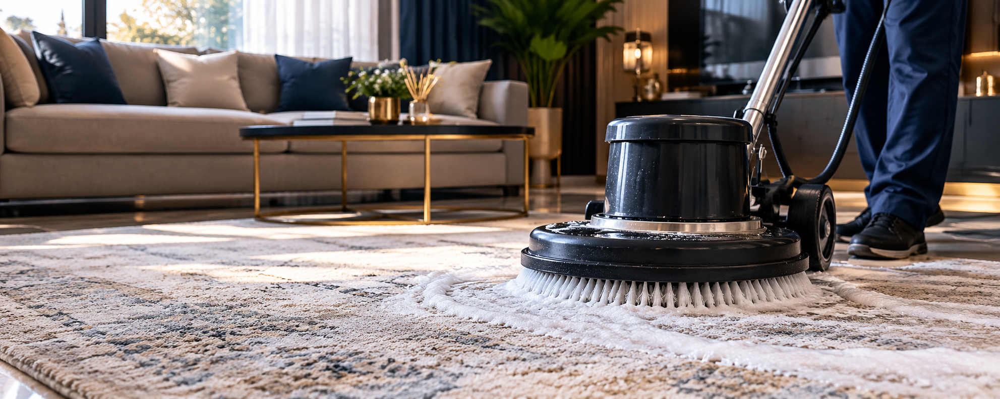

Halı Yıkama
Dokuya uygun uygulamalarla halılarınızı derinlemesine temizliyoruz.
Bilgi AlDÜZCE'DE YEREL, ÖZENLİ HİZMET
Halılarınızı son sistem makineler ve profesyonel yıkama yöntemleriyle hijyenik şekilde temizliyor, özenle teslim ediyoruz.
HİZMETLERİMİZ
Düzce halı yıkama hizmetimizden koltuk ve perde temizliğine kadar, ev tekstillerinize malzemesine uygun özenli bakım sunuyoruz.
Dokuya uygun uygulamalarla halılarınızı derinlemesine temizliyoruz.
Bilgi AlKumaş türüne göre dikkatle uygulanan koltuk temizliği.
Bilgi AlPerdeleriniz için formunu korumaya yardımcı nazik bakım.
Bilgi AlHassas yün dokulara uygun, özenli temizlik yaklaşımı.
Bilgi AlMevsimlik ev tekstilleriniz için ferah ve hijyenik temizlik.
Bilgi AlYerinde buharlı koltuk ve halı yıkama için bilgi alın.
Bilgi AlNEDEN BİZ?
Her ürüne aynı şekilde yaklaşmıyoruz. Temizlik sürecini malzemeye ve ihtiyaca göre özenle yürütüyoruz.
Bize DanışınHer adımda temizliğe ve özenli uygulamaya odaklanırız.
Profesyonel ekipmanlarla kontrollü temizlik süreci.
Temizlikte kaynakları gözeten, bilinçli seçimler yaparız.
Süreç ve teslimat planı için sizinle iletişimde kalırız.
İşini bilen bir ekiple özenli ve düzenli hizmet.
İhtiyacınızı dinler, sorularınızı açıkça yanıtlarız.
TEMİZLİK YOLCULUĞU
İlk teslim alıştan son kontrole kadar her aşamada titiz bir yaklaşım.
Ürünlerinizi teslim alır, ihtiyaçlarını not ederiz.
Yıkama öncesi kuru kir ve tozdan arındırırız.
Uygun yöntemle yıkar, durulama işlemini özenle yaparız.
Kurutma sonrası kontrol eder, teslimat için planlarız.

DÜZCE'DE GÜVENİLİR TEMİZLİKHAKKIMIZDA
Bizim Temizlik olarak Düzce'de halı ve ev tekstili temizliğini profesyonel bir yaklaşımla sunuyoruz. Halıdan koltuğa, perdeden yorgana kadar her ürünü kendi dokusuna ve ihtiyacına göre ele alıyoruz.
Son sistem makinelerimiz ve dört aşamalı yıkama sürecimizle, yaşam alanlarınıza temizliği ve ferahlığı özenle taşıyoruz. İhtiyacınızı konuşmak ve hizmetlerimiz hakkında bilgi almak için bize ulaşın.
Bizimle iletişime geçinMERAK EDİLENLER
Aklınızdaki soruların yanıtı burada değilse bize doğrudan ulaşın.
WhatsApp'tan sorunTeslimat süresi ürün ve iş yoğunluğuna göre değişebilir. Güncel bilgi ve planlama için lütfen Bizim Temizlik ile iletişime geçin.
Alım ve teslimat seçenekleri için bulunduğunuz bölgeyi belirterek bize danışabilirsiniz.
Farklı türde halılar için hizmet veriyoruz. Halınızın türünü ve özelliklerini paylaşarak uygun temizlik hakkında bilgi alabilirsiniz.
Yerinde buharlı koltuk yıkama hizmetimiz bulunuyor. Uygunluk ve detaylar için bizimle iletişime geçin.
Fiyat; hizmet türü, ürünün ölçüsü ve ihtiyacına göre değişebilir. Size özel fiyat almak için WhatsApp'tan bilgi gönderin.
BİZE ULAŞIN
Düzce'deki hizmetlerimiz hakkında bilgi alın, ihtiyacınıza uygun fiyatı birlikte konuşalım.
Düzce, Türkiye